Extra Credit 4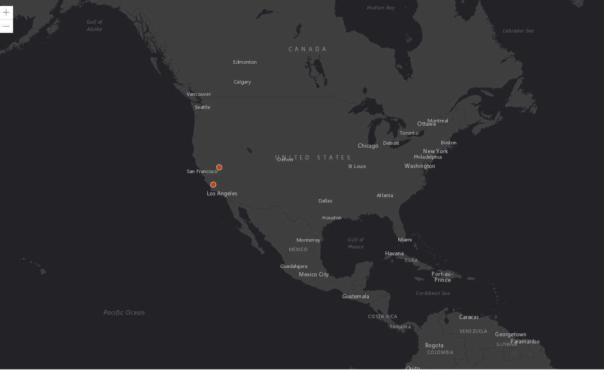Map 1 - Earthquake Points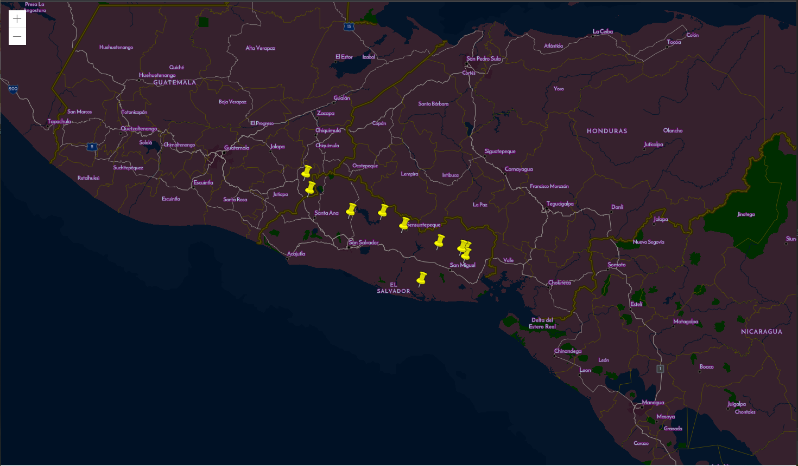Map 2 - Mines in El Salvador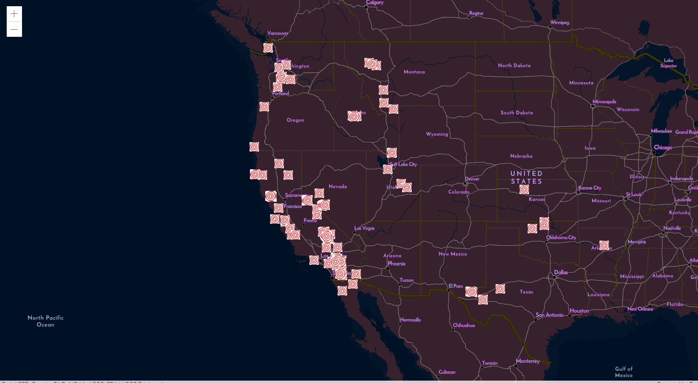Map 3 - Epicenters in the US Extra Credit 5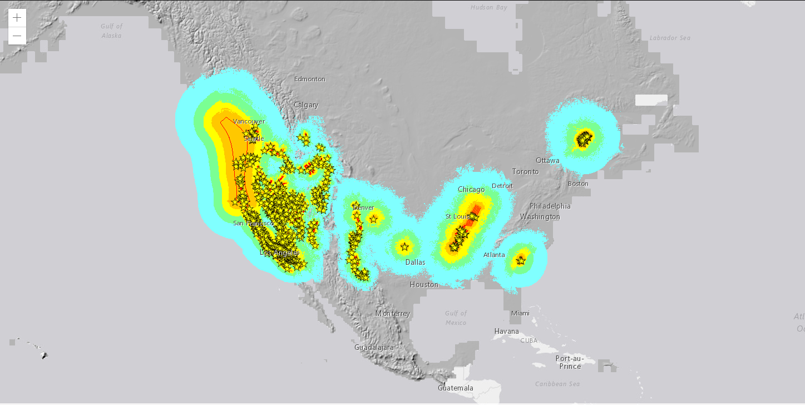Adding Layers Using Other API Modules Extra Credit 6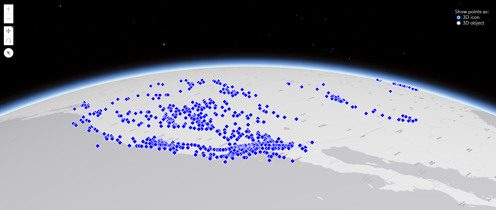Map 1 - Toggle 3D Symbols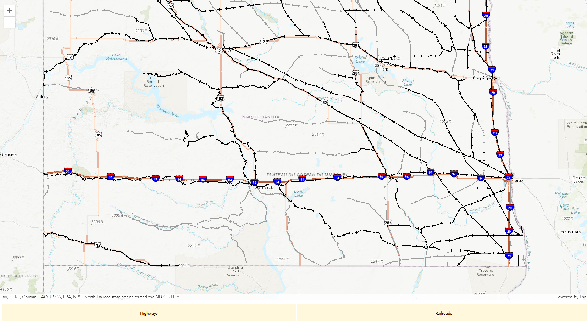Map 2 - Layer Visibility Control Extra Credit 7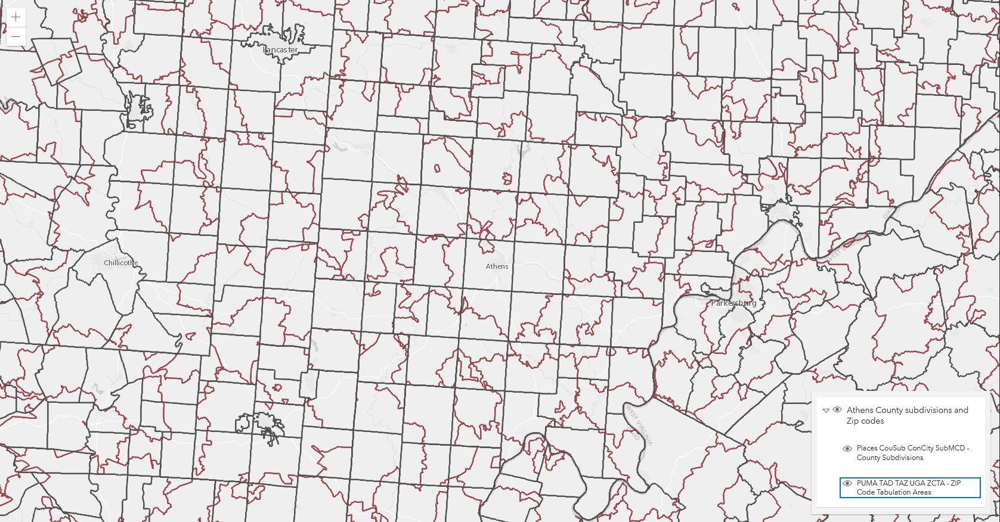Adding a Layer List Extra Credit 8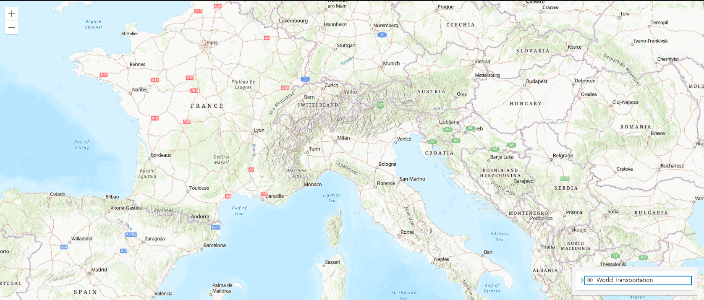Adding Layers Extra Credit 9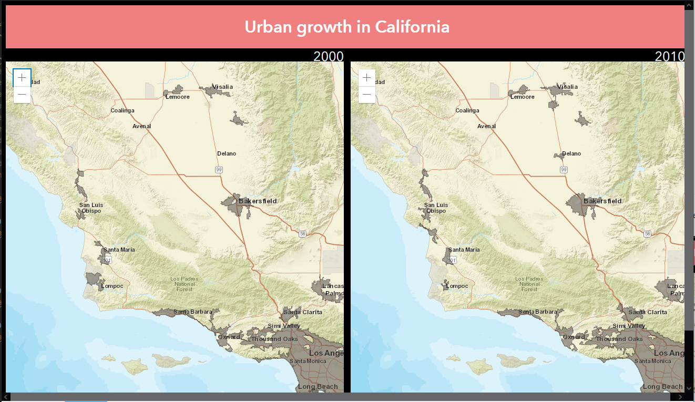Two Synchronized Views Extra Credit 10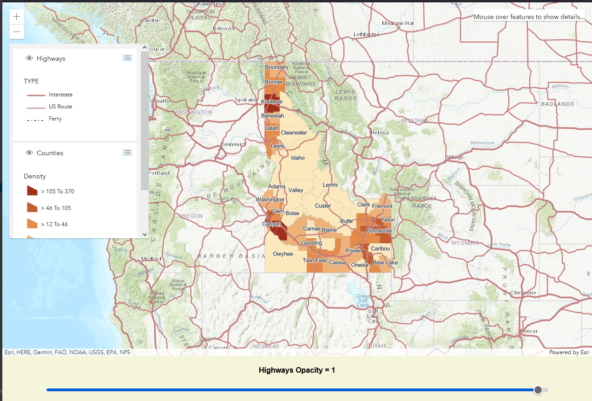Transparancy and HoverOver Extra Credit 11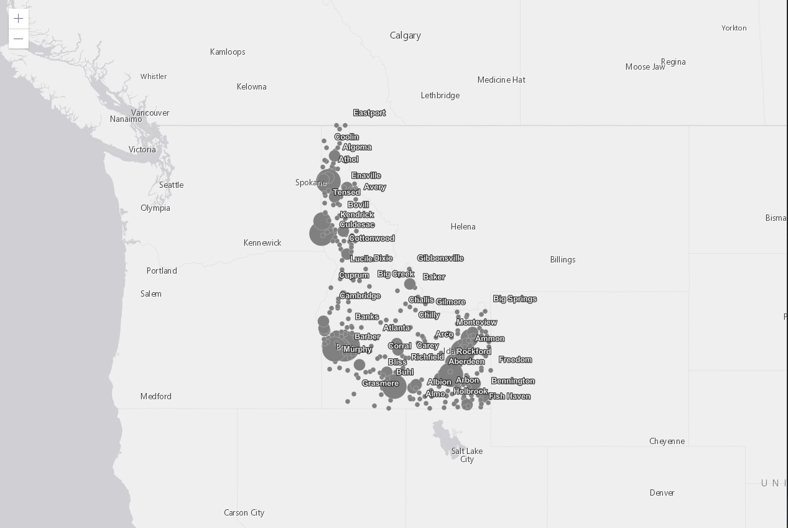Labeling Points